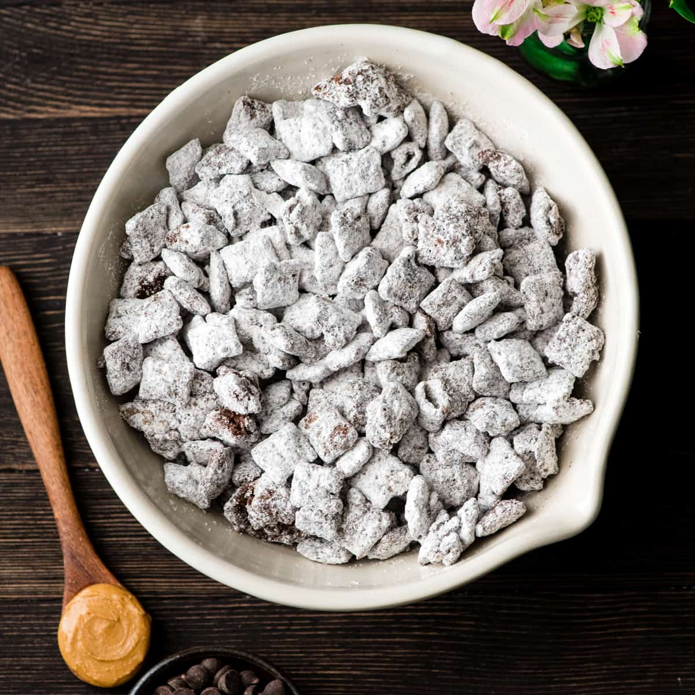

Puppy Chow Recipe

Description
The Best Puppy Chow Recipe (AKA: Muddy Buddies) EVER! Only 4 ingredients (no butter) and a few minutes results in an irresistible dessert loaded with chocolate and peanut butter! The perfect sweet treat to feed a crowd!
Ingredients
- 1 cup semisweet chocolate chips
- 1 cup peanut butter
- 6-7 cups Rice Chex Cereal
- 1-2 cups powdered sugar
Steps
- Melt peanut butter and chocolate together, either on the stovetop or in the microwave.
- Next, add 3 cups of cereal to a large bowl. Pour 1 cup of your chocolate/peanut butter mixture over the cereal.
- Add 3 more cups of cereal to the bowl and then pour the rest of the chocolate/peanut butter mixture on top.
- Stir until the cereal is evenly coated. If there are pools of chocolate/peanut butter at the bottom of your bowl, add more cereal 1/4 cup at a time until all that deliciousness is coating your cereal. Remember we WANT clumps, so do NOT add too much cereal!
- Let the mixture cool slightly (I throw mine in the fridge or outside on my porch if it’s cold out). You do not want it to harden!
- Once your mixture is at or below room temperature, add 1 cup of powdered sugar. Mix until combined.
- Let cool for about 15 minutes.
- Add more powdered sugar 1/4 cup at a time until your cereal is coated to your satisfaction.
- Store in an airtight container at room temperature, if it lasts more than 0.3 seconds.